|
Tablacus Explorer ツールバーのカスタマイズ方法
|

|
ツールバーに更新ボタンを追加してみましょう。
ツールバーにまだ登録がない場合は「+」が表示されています。
「+」を押すとツールバーの編集画面になります。

名前欄に「更新」と入力して下さい。
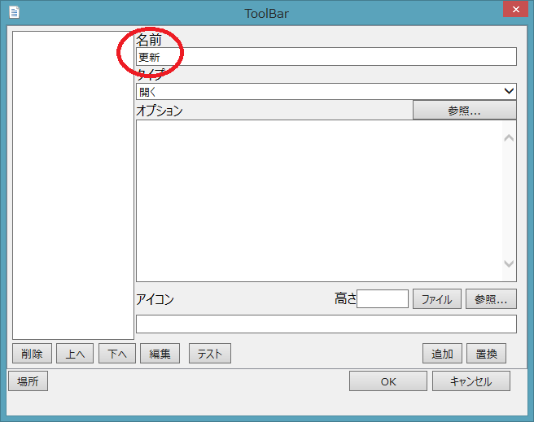
「タイプ」で「タブ」を選択して下さい。
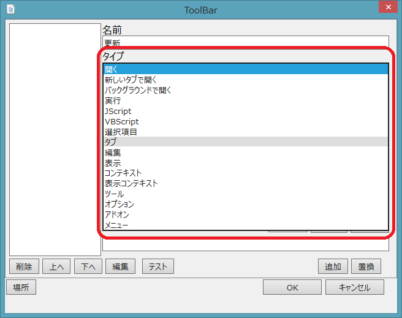
オプションの所の「参照...」を押して「最新の情報に更新」を選んで下さい。
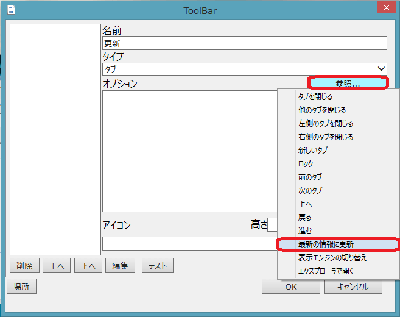
アイコンの所の「参照...」を押してアイコン選択ウインドウを表示します。
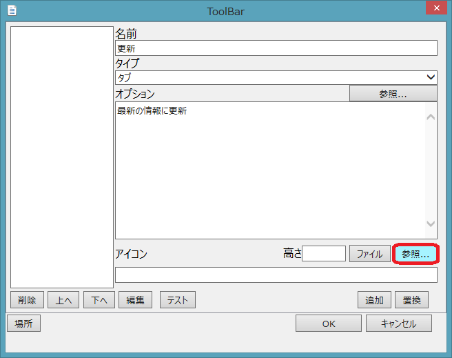
「24px ieframe,204」ボタンをクリックしてアイコンを表示します。他のボタンを押して他のアイコンを表示してもOKです。
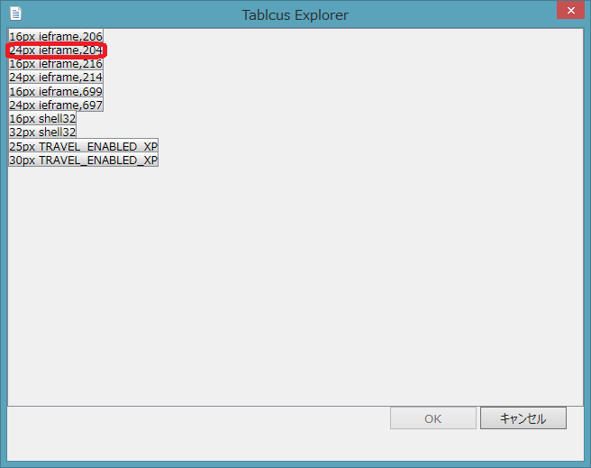
更新のアイコンをクリックします。
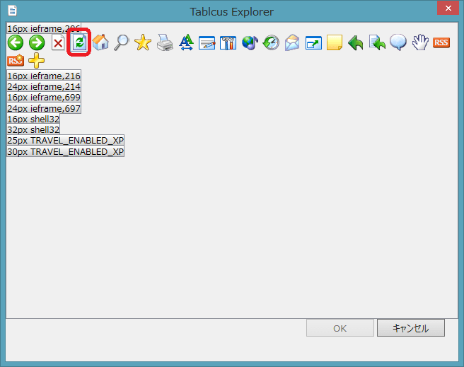
「OK」をクリックするとアイコンが決まります。
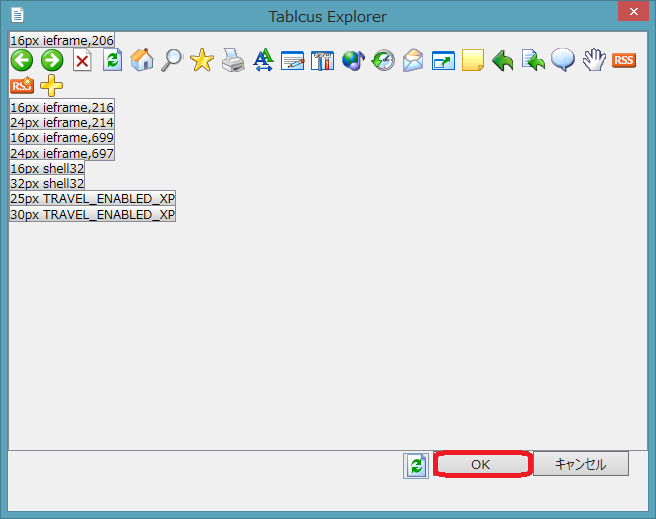
「追加」をクリックするとツールバーに更新ボタンが追加されます。
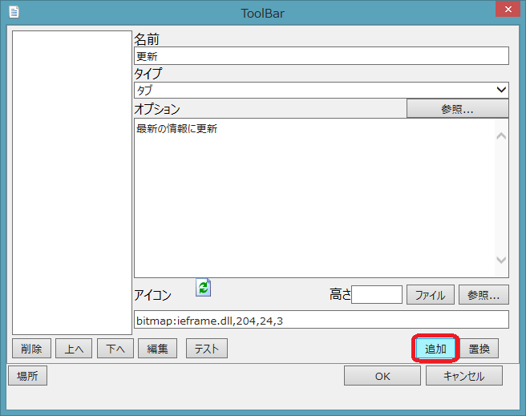
「OK」をクリックすると完了です。
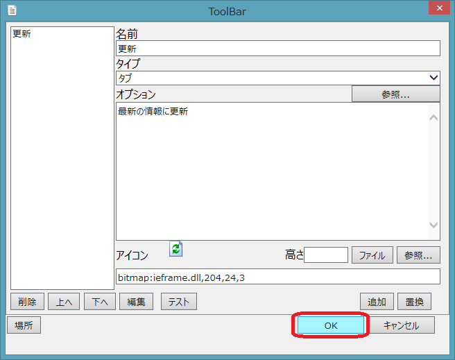
今度は「エディタで開く」を追加してみましょう。
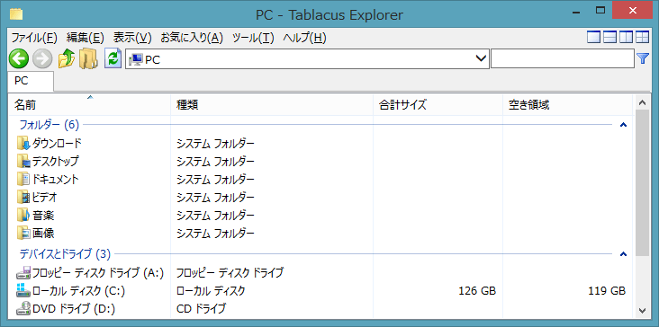
「+」を押す代わりに更新ボタンを右クリックして「追加」を選びます。
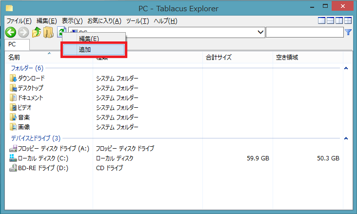
名前欄で「エディタで開く」と入力して下さい。
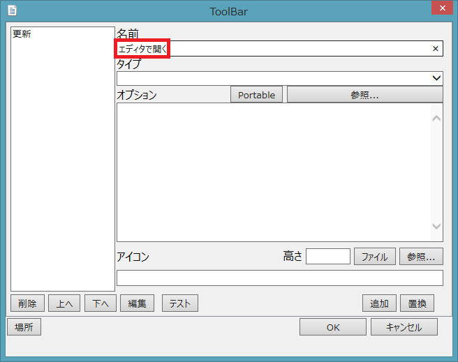
タイプで「選択項目」を選択して下さい。
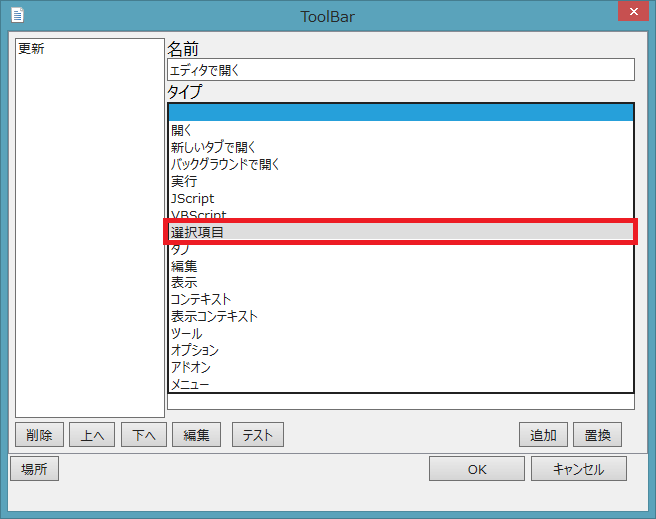
オプションの「参照...」を押して「アプリで開く...」を選びます。
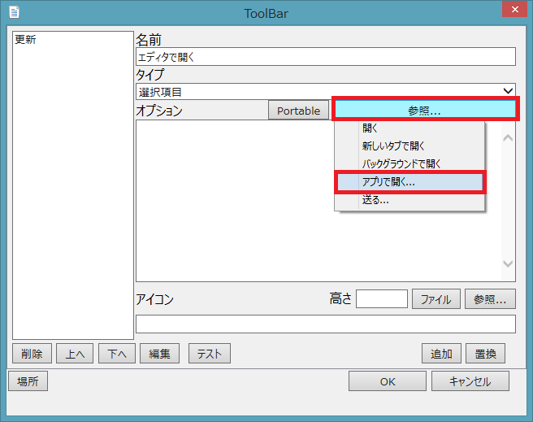
エディタソフトを選択して「開く(O)」を押して下さい。

アイコンの高さを「24」にして「ファイル」を押して下さい。
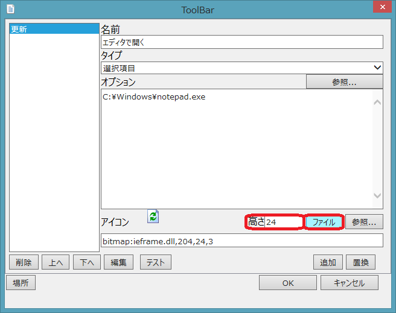
エディタソフトを選択して「開く(O)」を押して下さい。
「追加」をクリックするとツールバーにエディタで開くが追加されます。
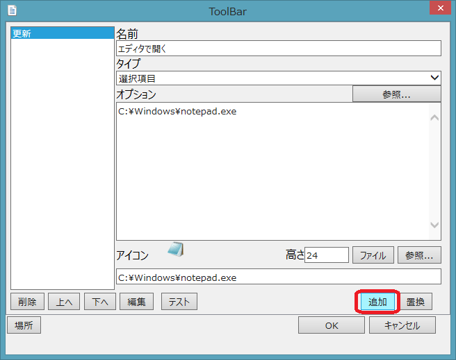
「OK」をクリックすると完了です。
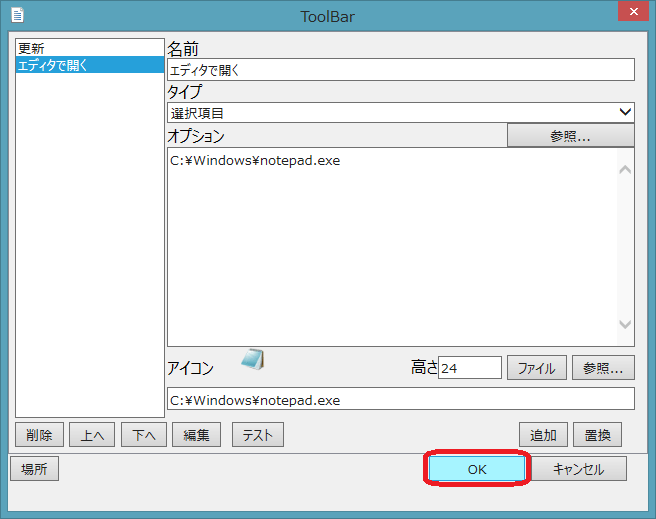
エディタで開きたいファイルを選択して「エディタ」のアイコンを押すと選択したファイルをエディタで開きます。
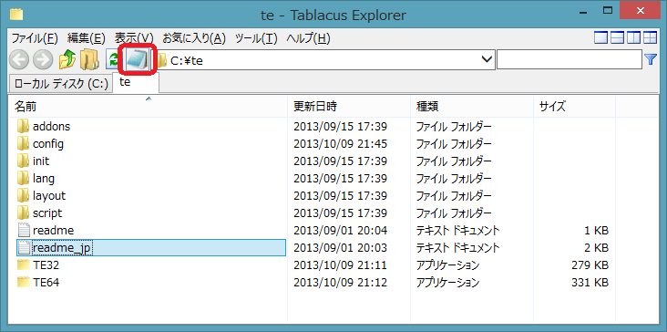
ツールバーを表示する位置を変更したい場合は「場所」をクリックします。
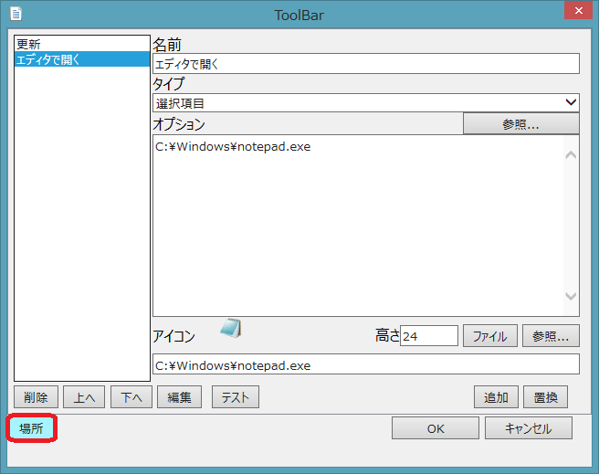
変更したい位置を選んで「OK」を押します。
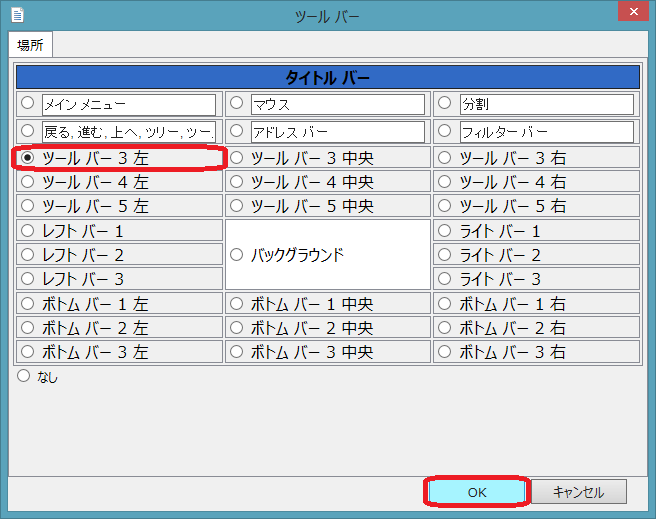
「OK」をクリックすると完了です。
下の段に移動しました。
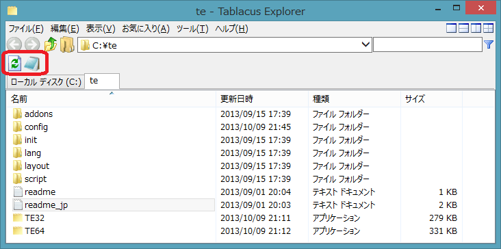